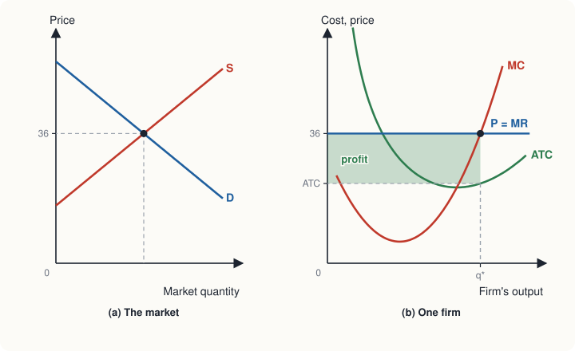
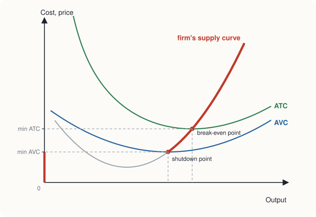

Chapter 8: Perfect Competition¶
How price-taking firms decide output, and why competition drives profit to zero
Learning outcomes
After studying this chapter you should be able to:
- State the conditions of perfect competition and explain why a competitive firm is a price taker.
- Show that for a competitive firm marginal revenue equals price.
- Find the profit-maximising output using the rule MR = MC, from a table or a diagram.
- Decide whether a firm making a loss should keep producing or shut down in the short run.
- Derive the firm's and the market's short-run supply curves from marginal cost.
- Explain how entry and exit drive economic profit to zero in the long run.
- Explain in what sense perfect competition is efficient.
8.1 What makes a market perfectly competitive¶
Chapter 2 described a competitive market loosely, as one with many buyers and sellers. Economists define perfect competition more precisely, by four conditions.
- Many buyers and many sellers, each so small relative to the market that its own decisions have no noticeable effect on the price.
- A homogeneous product. The goods of all sellers are the same, so buyers have no reason to prefer one seller over another. Wheat of a given grade is wheat, whoever grew it.
- Free entry and exit. In the long run, new firms can enter the industry and existing firms can leave without special barriers or costs.
- Perfect information. Buyers and sellers know the prices and the quality of the goods.
Few markets meet these conditions exactly. Markets for many farm products, for standard raw materials, and for some financial assets come close. The model is important less because it describes particular markets perfectly than because it is a benchmark: it shows how markets work when competition is as strong as possible, so that we can see what changes when it is weaker.
The firm as a price taker¶
Under these conditions, each firm is a price taker: it can sell as much as it wants at the market price, but nothing at a higher price, because buyers would simply go to another seller of the identical good. Nor would it want to charge less, since it can already sell all it wants at the market price.
So although the market demand curve slopes down, the demand curve facing an individual firm is horizontal at the market price: perfectly elastic (Chapter 3). The market price is set by market demand and supply; each firm takes it as given and chooses only how much to produce.
8.2 Revenue of a competitive firm¶
For a firm selling \(Q\) units at price \(P\):
- Total revenue \(TR = P \times Q\).
- Average revenue \(AR = TR/Q = P\). Average revenue is always the price, for any firm.
- Marginal revenue \(MR = \Delta TR/\Delta Q\): the extra revenue from selling one more unit.
For a price taker, each extra unit sells at the same price, so marginal revenue equals price:
If the market price is ₹40, every extra unit brings in exactly ₹40. The firm's demand curve, its average revenue curve and its marginal revenue curve are all the same horizontal line at ₹40.
8.3 Choosing output to maximise profit¶
We use the cost table of Chapter 7, for a firm with a fixed cost of ₹60, and suppose the market price is ₹40.
| Q | TR (₹) | TC (₹) | Profit (₹) | MR (₹) | MC (₹) |
|---|---|---|---|---|---|
| 0 | 0 | 60 | −60 | ||
| 1 | 40 | 90 | −50 | 40 | 30 |
| 2 | 80 | 110 | −30 | 40 | 20 |
| 3 | 120 | 126 | −6 | 40 | 16 |
| 4 | 160 | 140 | 20 | 40 | 14 |
| 5 | 200 | 160 | 40 | 40 | 20 |
| 6 | 240 | 186 | 54 | 40 | 26 |
| 7 | 280 | 220 | 60 | 40 | 34 |
| 8 | 320 | 268 | 52 | 40 | 48 |
Table 8.1. Revenue, cost and profit of a competitive firm at a price of ₹40.
Profit is greatest, at ₹60, when the firm produces 7 units. Notice how this relates to the last two columns. Each of the first 7 units adds more to revenue (₹40) than to cost (MC from ₹14 to ₹34), so each raises profit. The 8th unit adds ₹40 to revenue but ₹48 to cost, so it reduces profit by ₹8.
The rule MR = MC¶
This is marginal analysis (Chapter 1) applied to the firm:
- if MR > MC for the next unit, producing it raises profit, so the firm should expand output;
- if MR < MC, producing it lowers profit, so the firm should cut output;
- profit is maximised where MR = MC (with whole units, at the largest output for which MR is still at least MC).
The rule holds for every firm, competitive or not. For a competitive firm, since \(MR = P\), it becomes:
The qualification matters. In Table 8.1 marginal cost also passes through ₹40 on its way down (if we imagine a smooth curve), at an output below one unit. That point is a profit minimum: beyond it, MC is below the price and output should be expanded. The profit-maximising output is where MC crosses the price from below.
Measuring profit on a diagram¶
At the chosen output, profit can be written as
At 7 units, ATC is \(220/7 = 31.43\) rupees, so profit is \((40 - 31.43) \times 7 = 60\) rupees, as in the table. On a diagram, profit is the rectangle whose height is the gap between price and ATC and whose width is the quantity.

8.4 Losses and the shutdown decision¶
Suppose the market price falls to ₹30. Applying the rule, the firm produces up to the last unit whose MC is no more than ₹30: the 6th unit (MC ₹26); the 7th (MC ₹34) would not pay. At 6 units,
The firm makes a loss of ₹6. Should it close down?
In the short run, the fixed cost of ₹60 must be paid whether the firm produces or not: the rent is due, the machines are already bought. If the firm shuts down (produces nothing), its loss is the whole fixed cost, ₹60. If it produces 6 units, its loss is only ₹6. So it should keep producing. Its revenue of ₹180 more than covers its variable cost of ₹126, and the extra ₹54 goes towards paying the fixed cost.
Now suppose the price falls to ₹18. The lowest AVC in Table 7.2 is ₹20. At any output, revenue falls short of even the variable cost. For example, at 4 units, \(TR = 72\) while \(VC = 80\), so producing loses \(60 + 8 = 68\) rupees, more than the ₹60 lost by shutting down. The firm should shut down.
Key idea: the shutdown rule
In the short run, a firm should keep producing as long as the price covers average variable cost, even if it does not cover average total cost. It should shut down if the price falls below the minimum of average variable cost. Fixed costs are irrelevant to the decision, because they are paid either way.
Three ranges of price summarise the firm's position.
| Price compared with costs | Firm's position | Short-run decision |
|---|---|---|
| \(P >\) minimum ATC (₹31) | economic profit | produce where \(P = MC\) |
| minimum AVC (₹20) \(\le P <\) minimum ATC | loss smaller than fixed cost | produce where \(P = MC\) |
| \(P <\) minimum AVC (₹20) | producing would lose more than fixed cost | shut down |
Table 8.2. The firm's short-run decision at different prices.
At a price equal to minimum ATC (₹31), the firm produces 6 units and just breaks even: \(31 \times 6 = 186 = TC\). This is the break-even point. At a price equal to minimum AVC (₹20), it is indifferent between producing 5 units (loss \(160 - 100 = 60\)) and shutting down (loss ₹60). This is the shutdown point.
Shutting down is not the same as leaving
A firm that shuts down in the short run still has its fixed costs: it pays the rent and keeps its machines, hoping prices will recover. Exit means leaving the industry altogether, which is a long-run decision: the firm sells its equipment and ends its lease, so that it no longer has any costs. A seasonal hotel that closes in the off-season has shut down; one that sells its building has exited.
8.5 The firm's short-run supply curve¶
The firm produces where price equals marginal cost, as long as the price is at least the minimum of AVC. So the firm's short-run supply curve is its marginal cost curve above the minimum of average variable cost. Below that price, it supplies nothing.
From Table 7.2 the firm's supply schedule is:
| Price (₹) | below 20 | 20 to under 26 | 26 to under 34 | 34 to under 48 | 48 and above |
|---|---|---|---|---|---|
| Quantity supplied | 0 | 5 | 6 | 7 | 8 |
Table 8.3. The firm's short-run supply schedule, read from its marginal cost.

This is the theory behind the upward-sloping supply curve of Chapter 2. Supply curves slope up because marginal cost rises, and marginal cost rises because of diminishing marginal returns.
The market supply curve in the short run¶
In the short run the number of firms is fixed. The market supply curve is the horizontal sum of the supply curves of all the firms. If there are 200 identical firms like ours, then at a price of ₹40 the market supplies \(200 \times 7 = 1{,}400\) units; at ₹30, \(200 \times 6 = 1{,}200\) units. The market price is where this supply curve meets market demand, as in panel (a) of Figure 8.1.
8.6 The long run: entry and exit¶
In the long run, firms can enter and leave the industry. This changes everything.
Profits attract entry. Suppose the market price is ₹40 and each firm earns an economic profit of ₹60. Since economic profit means earning more than the resources could earn elsewhere, entrepreneurs outside the industry want a share. New firms enter. The market supply curve shifts to the right, and the market price falls. Entry continues as long as firms earn economic profit, that is, as long as the price is above minimum ATC.
Losses cause exit. If the price is below minimum ATC, firms make losses. In the long run, some leave the industry. The market supply curve shifts left and the price rises, until the remaining firms no longer make losses.
So in long-run equilibrium, the price settles where firms make zero economic profit:
In our example this is ₹31, at which each firm produces 6 units. If market demand at a price of ₹31 is 1,500 units, the industry settles with \(1{,}500/6 = 250\) firms.
Common mistake
Zero economic profit does not mean that firms are doing badly. It means they earn normal profit: their revenue covers all costs, including a return on the owner's time and money equal to what these could earn elsewhere. Accounting profit is positive. Firms stay in the industry because they are doing as well as they could do anywhere else.
The long-run supply curve of the industry¶
Suppose demand for the good increases permanently. In the short run, the price rises, existing firms move up their MC curves, and they earn economic profits. Over time new firms enter, supply increases and the price falls back. If the entry of new firms does not change the costs of firms (so that minimum ATC stays at ₹31), the price returns all the way to ₹31, and the industry produces more with more firms. The long-run supply curve of such a constant-cost industry is horizontal at minimum ATC.
If instead the expansion of the industry raises input prices (for example, because the industry needs a specialised kind of labour or land that becomes scarcer as it grows), minimum ATC rises with industry output, and the long-run supply curve slopes upwards. This is an increasing-cost industry. In either case, long-run supply is more elastic than short-run supply, as Chapter 3 said.
8.7 Perfect competition and efficiency¶
The long-run equilibrium of a perfectly competitive market has two properties that economists regard as highly desirable.
Allocative efficiency: price equals marginal cost. The price measures what buyers are willing to pay for the last unit, its marginal benefit (Chapter 5). Marginal cost measures the value of the resources used to produce it. When \(P = MC\), the last unit is worth exactly what it costs; producing more would cost more than it is worth, and producing less would forgo units worth more than they cost. This is the same as saying that total surplus is maximised (Chapter 4).
Productive efficiency: price equals minimum ATC. In the long run each firm produces at the lowest point of its average total cost curve, so the industry's output is produced at the lowest possible cost per unit. Firms with higher costs cannot survive.
These results, together with the absence of economic profit in the long run, are why economists use perfect competition as the benchmark against which other market structures are judged. Monopoly (Chapter 9) and imperfect competition (Chapter 10) generally fail one or both tests.
Tip
Learn the two efficiency conditions by what they compare. Allocative: price (the value to buyers) against marginal cost (the cost to society) for the last unit. Productive: the cost per unit against the lowest possible cost per unit.
8.8 Summary¶
- Perfect competition has many small buyers and sellers, a homogeneous product, free entry and exit, and perfect information. Each firm is a price taker facing a horizontal demand curve.
- For a competitive firm, \(MR = AR = P\).
- Every firm maximises profit where MR = MC; for a competitive firm this means P = MC on the rising part of MC. Profit equals \((P - ATC) \times Q\).
- In the short run, a firm should produce as long as \(P \ge\) minimum AVC, even at a loss; below that it should shut down. Fixed costs do not affect the decision.
- The firm's short-run supply curve is its MC curve above minimum AVC. Market supply is the horizontal sum.
- In the long run, entry and exit drive the price to minimum ATC, where economic profit is zero. The long-run supply curve is horizontal for a constant-cost industry and slopes up for an increasing-cost industry.
- Perfect competition achieves allocative efficiency (\(P = MC\)) and, in the long run, productive efficiency (\(P =\) minimum ATC).
8.9 Exercises¶
Exercise 1
Using Table 7.2, find the profit-maximising output and the profit when the market price is ₹50.
Answer
Produce while MC ≤ 50: the 8th unit costs ₹48, so the firm produces 8 units (Table 7.2 stops at 8). \(TR = 400\), \(TC = 268\), profit ₹132.
Exercise 2
Using Table 7.2, what should the firm do at a price of ₹24? What is its profit or loss?
Answer
₹24 is above minimum AVC (₹20) but below minimum ATC (₹31), so the firm should produce, at a loss. Produce while MC ≤ 24: the 5th unit (MC ₹20) but not the 6th (₹26), so 5 units. \(TR = 120\), \(TC = 160\), loss ₹40, which is less than the fixed cost of ₹60 it would lose by shutting down.
Exercise 3
A competitive firm produces 200 units at its best output. The price is ₹12, average total cost is ₹15 and average variable cost is ₹10. Find its fixed cost and its profit or loss. Should it produce in the short run? What will it do in the long run if the price stays at ₹12?
Answer
Average fixed cost is \(15 - 10 = 5\) rupees, so fixed cost is \(5 \times 200 =\) ₹1,000. Loss \(= (15 - 12) \times 200 =\) ₹600. Revenue (\(12 \times 200 = 2{,}400\)) covers variable cost (\(10 \times 200 = 2{,}000\)) and contributes ₹400 towards the fixed cost, so the loss from producing (₹600) is smaller than the loss from shutting down (₹1,000). Since \(P > AVC\), it should produce in the short run. In the long run, if the price stays below ATC, it should exit the industry.
Exercise 4
Explain why a firm in a perfectly competitive industry earns zero economic profit in the long run, but why this does not mean its owners are unhappy.
Answer
Positive economic profit attracts entry, which increases supply and lowers the price; losses cause exit, which raises the price. Entry and exit stop only when \(P =\) minimum ATC, where economic profit is zero. Zero economic profit is normal profit: owners earn as much as their time and money could earn in the best alternative, so they have no reason to leave.
Exercise 5
The demand for a good increases permanently in a constant-cost competitive industry. Describe what happens to the price, the output of each firm, the number of firms and industry output, in the short run and the long run.
Answer
Short run: the price rises; each existing firm moves up its MC curve and produces more; firms earn economic profit; the number of firms is unchanged; industry output rises. Long run: profits attract entry; supply shifts right until the price returns to minimum ATC; each firm produces its original output at minimum ATC; there are more firms; industry output is higher than in the short run.
Exercise 6
What are allocative and productive efficiency? Which of them does a competitive firm achieve in the short run when the price is above minimum ATC?
Answer
Allocative efficiency: \(P = MC\), so the last unit is valued at exactly what it costs. Productive efficiency: output is produced at minimum ATC. In the short run with \(P >\) minimum ATC, the firm produces where \(P = MC\), so it is allocatively efficient, but at an output above the minimum of ATC, so it is not productively efficient. Entry in the long run brings it to minimum ATC.
8.10 Quiz¶
Check your understanding of Chapter 8
Exercise 1
The demand curve facing a single perfectly competitive firm is
- downward sloping
- vertical
- horizontal at the market price
- the market demand curve
Answer
horizontal at the market price
Exercise 2
For a perfectly competitive firm, marginal revenue is
- greater than price
- equal to price
- less than price
- zero
Answer
equal to price
Exercise 3
A firm should shut down in the short run if the price falls below
- minimum average total cost
- minimum average variable cost
- average fixed cost
- marginal revenue
Answer
minimum average variable cost
Exercise 4
A competitive firm sells 100 units at ₹25 each. Its average total cost is ₹21. What is its profit, in rupees?
Answer
400 / ₹400
Exercise 5
The short-run supply curve of a competitive firm is
- its average total cost curve
- its marginal cost curve above minimum average variable cost
- its marginal cost curve above minimum average total cost
- horizontal at the market price
Answer
its marginal cost curve above minimum average variable cost
Exercise 6
In long-run equilibrium in perfect competition
- price equals minimum average total cost and economic profit is zero
- firms earn large economic profits
- price is above marginal cost
- accounting profit is zero
Answer
price equals minimum average total cost and economic profit is zero
Exercise 7
Allocative efficiency requires
- price equal to marginal cost
- price equal to average fixed cost
- output at maximum total product
- zero accounting profit
Answer
price equal to marginal cost